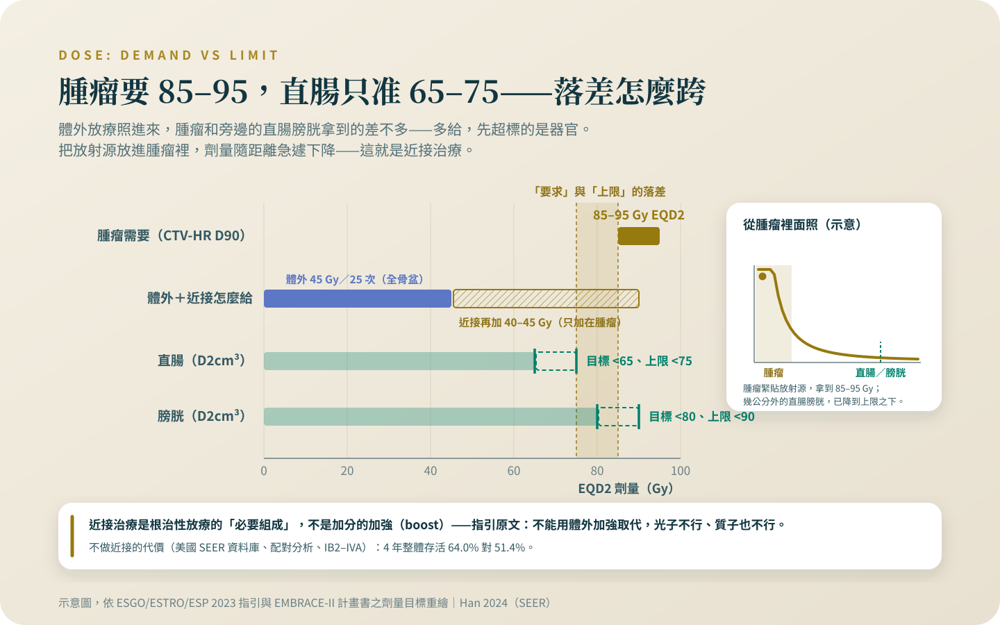

近接治療：名字最可怕，那幾天最關鍵
腫瘤需要 85 到 95 Gy，貼在旁邊的直腸膀胱只受得了 65 到 90——這個落差，只有從裡面照的近接治療補得起來，跳過它的代價是存活。
這一篇同時做兩件事：把「可以不做嗎」的答案用資料庫與指引原文釘死，也把置入、麻醉、等待、疼痛的每一步照實講——包括那個 41% 的創傷壓力數字是在什麼流程下量出來的。怕，多半是因為沒人先講實話。
先說我的位置：根治性化放療與近接治療是我自己每天在做的治療。所以這個專題裡關於放療的每一句話，我寫得比別人更保守，不是更熱。
「近接治療」這個名字，在診間引出來的，翻來覆去是同一組問題：可以不做嗎？可以用比較新的「高精準」放療代替嗎？我要先把答案講死，再來拆解過程——因為這一題答錯的代價，是存活。近接治療是根治性放療的組成部分，跟體外放療、每週化療同一個位階；它不是加分題，體外放療再精準也取代不了它。這篇文章的其餘部分，都是在解釋為什麼，以及那幾天實際會發生什麼。
腫瘤要的劑量，跟旁邊器官受得了的劑量，中間有一個洞
數字攤開來看就懂了。歐洲三個學會（ESGO/ESTRO/ESP）2023 年更新的指引寫得很具體：體外放療給全骨盆 45 Gy、分 25 次，近接治療要在這之上再加 40 到 45 Gy 的等效劑量，把腫瘤核心推到 85 到 95 Gy[1]。問題是直腸和膀胱就貼在子宮頸旁邊：EMBRACE-II 這個國際前瞻研究的計畫書，把直腸的劑量上限訂在 65 到 75 Gy、膀胱訂在 80 到 90 Gy[2]。腫瘤要 85 到 95，緊貼著它的器官只准 65 到 90——從體外照進去的射線，沒有辦法同時滿足這兩件事。把放射源放進腫瘤裡面，劑量隨著距離急遽下降，才能在幾公釐之內做出這個落差。這不是廠牌或技術等級的問題，是幾何的問題。
跳過它的代價，已經有人用幾千個病人量過了
美國 SEER 資料庫 2024 年的更新分析收了 2000 到 2020 年間 8,500 名接受體外放療的局部晚期病人，配對之後，有做近接的人四年整體存活 64.0%、沒做的 51.4%；死於子宮頸癌的風險比 0.70（95% 信賴區間 0.64 到 0.76——信賴區間是這個估計合理的擺盪範圍，整段都壓在 1 以下，方向很穩）、全因死亡 0.72（風險比是把兩組事件發生的速度相除，低於 1 代表有做近接那組死亡發生得明顯比較慢）[3]。更需要警惕的是另一份：NCDB 資料庫 7,654 名 2004 到 2011 年的 IIB 到 IVA 期病人裡，用 IMRT 或 SBRT 這類「高精準」體外技術代替近接來做加強的人，死亡風險比是 1.86（1.35 到 2.55）——這個傷害，比整個療程不做化療（1.61）還大[4]。這些是觀察性資料庫，不是隨機試驗，配對後仍可能有殘留的干擾；但方向跟前瞻資料、跟劑量邏輯完全一致，而且指引已經把話說死了。
這段歷史有一個教訓。同一團隊較早的分析發現，美國的近接使用率從 1988 年的 83% 一路掉到 2009 年的 58%，2003 年一度只剩 43%——那正是各種新型體外技術上市的年代[5]。後來整個領域回頭修正：2014 年有一篇專文，標題就叫「局部晚期子宮頸癌的根治性放療：近接治療不是可選項」[6]；到 2018 至 2020 年，使用率已經回升到 76%[3]。「大家越來越不做」是歷史，不是現在；但那段歷史付出的存活代價，是這篇文章存在的理由。ESGO 2023 的原文我直接翻譯：影像導引近接治療是根治性放療的必要組成，不應以體外加強取代——光子不行，質子也不行；如果這家醫院做不了，病人應該被轉到做得了的地方[1]。你不需要點名質問任何醫院，只需要問一句：「我的近接治療會怎麼安排？」

把它做好，換到的是什麼
EMBRACE-I 收了 24 個中心、1,341 名病人，用磁振造影導引的近接治療，五年的局部控制率 92%；嚴重（第 3 級以上）的晚期副作用，泌尿道 6.8%、腸胃道 8.5%、陰道 5.7%，各在一成以下[7]。注意「局部控制」講的是腫瘤在原位不復發，不是存活率，兩者不能混用。分期別的資料在 retroEMBRACE：五年局部控制 IB 期 98%、IIB 期 91%、IIIB 期 75%[8]——大腫瘤做了也不是百分之百，我不會把它講成保票；但這是目前前瞻資料裡拿得出來的成績，而它的前提就是近接有做、而且做完整。
那幾天實際會發生什麼
過程我逐步講，不美化。醫師會在麻醉下，把一支細管（子宮腔內管）經陰道放進子宮腔，陰道端再放上卵圓體或環狀的置入器；腫瘤形狀需要時，會加上細針直接插進組織。「應該在麻醉下執行」是指引的原文，不是我個人的做法[1]；用全身、半身還是鎮靜，各醫院不同，這一題你可以事先問。置入之後照影像（指引首選磁振造影，也可以用電腦斷層或超音波），每一次置入都要重新計算劑量才治療[1][9]——所以置入器放好之後還要等，等的不是排隊，是物理師在替你算安全。高劑量率（HDR）的做法通常做 3 到 4 次、每次至少間隔 6 到 8 小時，大腫瘤的近接會排在化放療接近尾聲或結束後一到兩週內[1]；美國近接治療學會的常用分割則是 5 次[9]——次數依各院的劑量設計而定，3 次跟 5 次都不是誰做錯了。真正照射的時間很短：放射源進來幾分鐘就退出去[10]。整天下來最花時間的是置入、影像與計算，不是照射本身。
不舒服是真的，我不打算粉飾
有研究誠實量過這件事。一個單一機構的前瞻研究追蹤 50 名病人——該院的做法是一次置入、置入器留置過夜、打兩個分次、用脊椎或硬脊膜外麻醉——治療後一週有 30% 出現急性壓力症狀，三個月後有 41% 有創傷後壓力症狀[11]。同一份研究把壓力來源拆開來看：主要不是置入本身，而是兩個分次之間帶著置入器不能動的那段時間；有幫助的因素是事前說明、疼痛有人管、團隊在旁邊[11]。所以那個 41% 不能直接套在當天置入、當天完成的流程上，但它提醒的事是通用的：一份收了 19 篇研究的系統性回顧發現，10 篇心理層面的研究裡有 9 篇把近接描述為令人痛苦的經驗，而止痛與麻醉的做法各院差異很大[12]。我的結論很直接：會不舒服，這是實話；但疼痛是可以被管理的，前提是你事先知道流程、當下把痛講出來。被嚇到中途放棄的病人，多半是沒有人先跟她講實話。
做完之後，身體裡沒有放射性
HDR 近接治療每次放射源只進來幾分鐘，退出去之後，你身上沒有任何放射性物質留著[10]。抱小孩、跟伴侶同床，都不需要隔離。站上〈治療中的性生活，誰來開這個口〉有一段講「身體裡有放射線種子」，那說的是攝護腺癌的永久性植入，跟這裡的遙控後荷式治療是兩回事，請不要把那一段讀到自己身上。治療期間哪些狀況要當天聯絡團隊，整份清單我放在〈骨盆放療的五、六週怎麼過〉；那一篇也會講為什麼整個療程拖長會輸掉局部控制——近接排在療程尾聲，正是最不能鬆手的一段。
下次回診前，可以先準備的三個問題
台灣端先講一件可以放心的事：近接治療在健保署的「醫療服務給付項目」檔裡有明列的支付項目，包括安裝近接治療器與遙控後荷式近距治療[13]；細部的給付條件與費用，向醫院醫務課或個管師確認。順帶一提，SBRT 當年納入健保的公告範圍是原發性早期肺部及肝膽單一病灶[14]——「用 SBRT 代替近接」在台灣既沒有實證，也不在那個範圍裡。今天就可以把三個問題寫下來，下次回診問出口：我的近接治療預計做幾次、什麼時候開始？置入是用哪一種麻醉，痛的時候找誰？置入器放著的那段時間，我會在哪裡、大概多久？問完這三題，「名字最可怕」的部分通常就結束了，剩下的是團隊跟你一起把那幾天走完。
各醫院的近接次數、麻醉方式與當天流程差異很大，我寫的是通則。下次回診請直接問：我的近接預計幾次、什麼時候開始、痛的時候找誰。這三題問完，恐懼通常就小了一半。
參考資料
Cibula, D., Raspollini, M. R., Planchamp, F., et al. (2023). ESGO/ESTRO/ESP Guidelines for the management of patients with cervical cancer — Update 2023. International Journal of Gynecological Cancer, 33(5), 649-666. DOI: 10.1136/ijgc-2023-004429
Pötter, R., Tanderup, K., Kirisits, C., et al.; EMBRACE Collaborative Group. (2018). The EMBRACE II study: The outcome and prospect of two decades of evolution within the GEC-ESTRO GYN working group and the EMBRACE studies. Clinical and Translational Radiation Oncology, 9, 48-60. DOI: 10.1016/j.ctro.2018.01.001
Han, K., Colson-Fearon, D., Liu, Z. A., & Viswanathan, A. N. (2024). Updated Trends in the Utilization of Brachytherapy in Cervical Cancer in the United States: A Surveillance, Epidemiology, and End-Results Study. International Journal of Radiation Oncology, Biology, Physics, 119(1), 143-153. DOI: 10.1016/j.ijrobp.2023.11.007
Gill, B. S., Lin, J. F., Krivak, T. C., et al. (2014). National Cancer Data Base analysis of radiation therapy consolidation modality for cervical cancer: the impact of new technological advancements. International Journal of Radiation Oncology, Biology, Physics, 90(5), 1083-1090. DOI: 10.1016/j.ijrobp.2014.07.017
Han, K., Milosevic, M., Fyles, A., Pintilie, M., & Viswanathan, A. N. (2013). Trends in the utilization of brachytherapy in cervical cancer in the United States. International Journal of Radiation Oncology, Biology, Physics, 87(1), 111-119. DOI: 10.1016/j.ijrobp.2013.05.033
Tanderup, K., Eifel, P. J., Yashar, C. M., Pötter, R., & Grigsby, P. W. (2014). Curative radiation therapy for locally advanced cervical cancer: brachytherapy is NOT optional. International Journal of Radiation Oncology, Biology, Physics, 88(3), 537-539. DOI: 10.1016/j.ijrobp.2013.11.011
Pötter, R., Tanderup, K., Schmid, M. P., et al.; EMBRACE Collaborative Group. (2021). MRI-guided adaptive brachytherapy in locally advanced cervical cancer (EMBRACE-I): a multicentre prospective cohort study. The Lancet Oncology, 22(4), 538-547. DOI: 10.1016/S1470-2045(20)30753-1
Sturdza, A., Pötter, R., Fokdal, L. U., et al. (2016). Image guided brachytherapy in locally advanced cervical cancer: Improved pelvic control and survival in RetroEMBRACE, a multicenter cohort study. Radiotherapy and Oncology, 120(3), 428-433. DOI: 10.1016/j.radonc.2016.03.011
Viswanathan, A. N., Beriwal, S., De Los Santos, J. F., et al. (2012). American Brachytherapy Society consensus guidelines for locally advanced carcinoma of the cervix. Part II: high-dose-rate brachytherapy. Brachytherapy, 11(1), 47-52. DOI: 10.1016/j.brachy.2011.07.002
American Cancer Society. Radiation Therapy for Cervical Cancer.
Kirchheiner, K., Czajka-Pepl, A., Ponocny-Seliger, E., et al. (2014). Posttraumatic stress disorder after high-dose-rate brachytherapy for cervical cancer with 2 fractions in 1 application under spinal/epidural anesthesia: incidence and risk factors. International Journal of Radiation Oncology, Biology, Physics, 89(2), 260-267. DOI: 10.1016/j.ijrobp.2014.02.018
Humphrey, P., Bennett, C., & Cramp, F. (2018). The experiences of women receiving brachytherapy for cervical cancer: A systematic literature review. Radiography, 24(4), 396-403. DOI: 10.1016/j.radi.2018.06.002
衛生福利部中央健康保險署。全民健康保險醫療服務給付項目及支付標準之項目檔（114.01.01 生效版）。
本文為一般性衛教說明，整理自公開發表的研究與官方公告，不能取代面對面的診療。研究結果適用的族群通常有嚴格條件，是否適用於你的情況，請與你的主治醫師討論。請勿依據本文自行調整、中斷或更換治療。
← 回到子宮頸癌專題